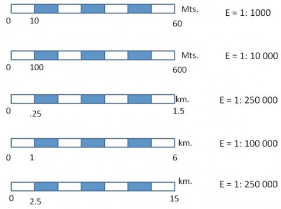

3.2 L'Escala Cartogràfica: Del Paper a la Realitat
Com calcular les dimensions reals del territori de Pocona a partir d'un mapa o plànol utilitzant proporcions matemàtiques, escales numèriques i regles gràfiques.
Què és l'Escala Cartogràfica?
L’escala és la relació matemàtica de proporció que existeix entre les dimensions dibuixades sobre el paper (o pantalla) i les dimensions reals sobre el terreny:
- Escala Numèrica: S'expressa com una fracció, per exemple
1:25.000. Significa que 1 cm al mapa equival a 25.000 cm a la realitat (és a dir, 250 metres). - Escala Gràfica: És una petita barra graduada com un regle dibuixada al mapa. Permet mesurar directament amb un compàs o una tira de paper sense fer càlculs complexos.

Comparació entre l'escala numèrica (relació de reducció) i la barra gràfica graduada en metres o quilòmetres.
Arrossega els dos punts de mesura (Punt A en cian i Punt B en taronja) sobre el mapa de la vall. Tria l'escala del mapa i observa com es converteixen automàticament els centímetres de pantalla en metres i quilòmetres reals sobre el terreny!
🧠 Com s'interpreta aquest càlcul pas a pas? (Mètode de l'Enginyer/a)
Fórmula: Real = Mapa × EscalaLongitud recta mesurada físicament amb el regle sobre el mapa.
Apliquem la reducció cartogràfica per saber els centímetres reals.
Dividim entre 100 per a metres (÷ 100) o entre 1.000 per a km.
• A escala
1:10.000 ➔ 1 cm al mapa equival directament a 100 metres reals.• A escala
1:25.000 ➔ 1 cm al mapa equival directament a 250 metres reals.• A escala
1:50.000 ➔ 1 cm al mapa equival directament a 500 metres reals (mig quilòmetre).
Missió Tècnica: Reptes de Càlcul d'Escales
Aplica el que has après sobre el mapa per superar els 3 reptes de topografia!
L'equip topogràfic mesura amb un regle 8,5 cm sobre un mapa a escala 1:25.000. Quina és la distància real sobre el terreny en metres?
Al selector de «Ruta Ràpida de Mostra» superior, tria «Poble de Pocona ➔ Comunitat Chillijchi» i posa l'escala a 1:10.000. Quants quilòmetres (km) reals separa ambdós punts? (Introdueix el valor amb 2 decimals).
Volem imprimir un plànol per als instal·ladors on una distància real de 3.500 metres ocupi exactament 7 cm al paper. Quina escala hem d'escollir?